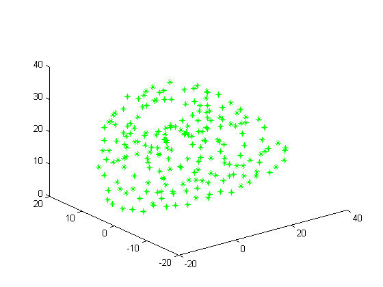
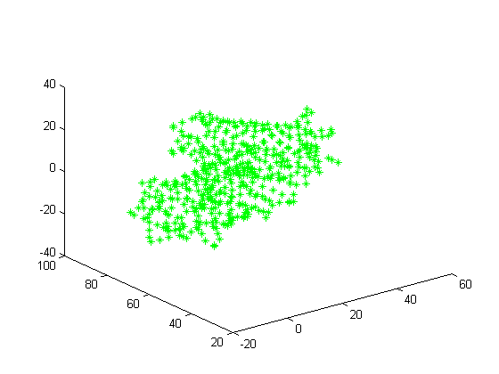

Contents
% Solution to Assignment 6: Andrew Gerst clear all; close all;
Function Descriptions
readPDBfile Function
This function reads the atoms for a protein and returns their serial number, atom name, and coordinates.
type readPDBfile
function [anum, aname, coords] = readPDBfile(infile)
% This function reads the atoms for a protein and returns their serial
% number, atom name, and coordinates.
fid = fopen(infile,'rt');
if fid == -1
return
end
anum = []; aname = []; coords = [];
while ~feof(fid)
line = fgetl(fid);
record = line(1:6);
num = line(7:11);
name = line(13:16);
seqnum = line(23:26);
xcoord = line(31:38);
ycoord = line(39:46);
zcoord = line(47:54);
coord = [str2double(xcoord) str2double(ycoord) str2double(zcoord)];
if strcmp(record,'ATOM ')
anum = [anum;str2num(num)];
aname = [aname;upper(name)];
coords = [coords;coord];
end
end
aname = strtrim(aname);
fclose(fid);
end
potentialHbonds Function
This function looks for any possible pairs of Nitrogen and Oxygen between a distance of 2.6 and 3.2 angstroms. Returns a list containing the pairs of atom numbers for hydrogen bonding pairs.
type potentialHbonds
function pairs = potentialHbonds(anum, aname, coords)
% This function looks for any possible pairs of Nitrogen and Oxygen between
% a distance of 2.6 and 3.2 angstroms. Returns a list containing the pairs
% of atom numbers for hydrogen bonding pairs.
pairs = [];
name = cellstr(aname);
nitrogen = [];
oxygen = [];
for idx = 1:length(name)
if name{idx}(1) == 'N'
nitrogen = [nitrogen idx];
elseif name{idx}(1) == 'O'
oxygen = [oxygen idx];
end
end
for ii = 1:length(nitrogen)
for jj = 1:length(oxygen)
n_idx = nitrogen(ii);
o_idx = oxygen(jj);
d = sqrt((coords(n_idx,1)-coords(o_idx,1))^2 + (coords(n_idx,2)-coords(o_idx,2))^2 + (coords(n_idx,3)-coords(o_idx,3))^2);
if d > 2.6 && d < 3.2
pairs = [pairs; [anum(n_idx) anum(o_idx)]];
end
end
end
end
drawAtoms Function
This function plots any atoms with aname matching the queryName.
type drawAtoms
function ret = drawAtoms(queryName, marker, aname, coords)
% This function plots any atoms with aname matching the queryName.
query = strtrim(queryName);
name = cellstr(aname);
coord = [];
for idx = 1:length(name)
if strcmp(query,name{idx})
coord = [coord; [coords(idx,1) coords(idx,2) coords(idx,3)]];
end
end
plot3(coord(:,1),coord(:,2),coord(:,3),marker);
end
Protein 7HVP
[anum aname coords] = readPDBfile('7HVP.pdb'); % Generate 3D Plot of C atoms drawAtoms(' C ', 'g*', aname, coords); % Output number of hydrogen bonds pairs = potentialHbonds(anum, aname, coords); numOfHbondPairs = length(pairs)
numOfHbondPairs = 286
Protein 1GFL
[anum aname coords] = readPDBfile('1GFL.pdb'); % Generate 3D Plot of C atoms drawAtoms(' C ', 'g*', aname, coords); % Output number of hydrogen bonds pairs = potentialHbonds(anum, aname, coords); numOfHbondPairs = length(pairs)
numOfHbondPairs = 775